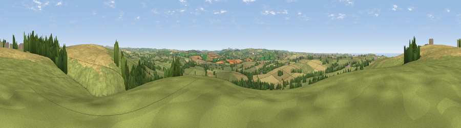

Viewpoint near Chapel Amble
#6228 in England · top 16% of its area beats it · near Chapel AmbleThe view, rendered

A 360° render of this exact spot computed from the terrain model, tree cover and land cover — summer colours, afternoon light, calibrated against photographs of famous viewpoints. Real trees, hedges and buildings will differ in detail.
The panorama
Grey silhouette: terrain skyline in each direction (720 bearings, Earth curvature and refraction included). Dashed green: skyline with trees (+15 m) and buildings (+8 m) as obstacles. Blue strip: how far the ground is visible on each bearing.
Where the view opens
Wedge length = distance to the farthest visible ground on that bearing (vegetation-aware). Rings at 10, 25 and 50 km.
What fills the view
54% grassland · 36% cropland · 8% woodland ·
Angular shares of the visible panorama (visual magnitude), not map area. Landscape diversity 0.42 (0–1 Shannon).
Key numbers
More beautiful places nearby
The staircase of upgrades: each row has a higher view potential than everything closer. Driving times are estimates from straight-line distance, calibrated against real road routing — check an actual route before setting out.
| Place | Direction | Drive | Score |
|---|---|---|---|
| Viewpoint near Port Isaac | NNW · 0 km | ~2 min | 77.8 |
| Viewpoint near Port Isaac | NE · 4 km | ~9 min | 79.7 |
| Viewpoint near Boscastle | NE · 14 km | ~25 min | 82.0 |
| Viewpoint near Boscastle | NE · 15 km | ~26 min | 84.3 |
| Viewpoint near Boscastle | NE · 15 km | ~27 min | 85.2 |
| Viewpoint near Boscastle | NE · 20 km | ~33 min | 85.8 |
| Viewpoint near Lesnewth | NE · 20 km | ~34 min | 87.7 |
| Viewpoint near Stenalees | S · 21 km | ~35 min | 88.0 |
50.56889, -4.83041 · source: screening · position refined by local search. Computed location — check access rights before visiting.